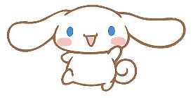

|  | Cinnamon (シナモン), lebih dikenal sebagai Cinnamoroll (シナモロール), adalah karakter Sanrio dan karakter utama dari alam semesta Cinnamoroll. Ia lahir pada tanggal 6 Maret, di atas awan jauh di angkasa. Dia adalah anjing kecil, pemalu dan gemuk dengan bulu putih, mata biru, pipi merah muda, ekor montok dan keriting yang menyerupai gulungan kayu manis (sesuai namanya), dan telinga panjang yang memungkinkan dia terbang. Cinnamon pemalu tapi ramah, dan selalu bersedia membantu teman-temannya saat mereka membutuhkannya. Dia bekerja di Café Cinnamon, dan terkadang tidur di pangkuan pelanggan. Makanan favorit Cinnamon adalah gulungan kayu manis yang hangat dan segar. Cerita Cinnamoroll biasanya ringan dan menekankan tema persahabatan, kebaikan, dan petualangan. Narasi ini sering kali melibatkan skenario lucu dan konflik lembut yang diselesaikan melalui kerja sama dan pengertian, yang mencerminkan nilai-nilai yang dipromosikan Sanrio melalui karakternya. |
| Informasi Lebih Lengkap Bisa Kamu Baca Disini!૮₍˶ᵔ ᵕ ᵔ˶₎ა |